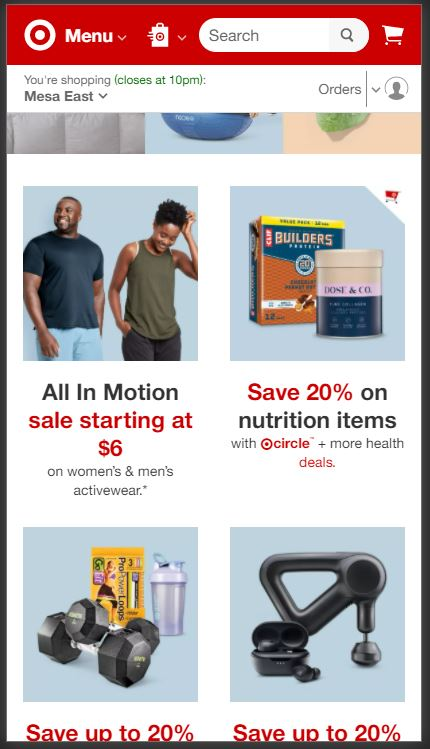

Rule of Thirds
Honda
Honda uses the rule of thirds on their website by splitting the images and links up in thirds. For example, the Honda Go picture of the motorcycle has us focus on the 2 thirds of the motorcycle picture and the last third on the Honda Go logo.
Alignment
Target
target.com Target uses Alignment on its page for their products on the website. In the picture above we can see they use alignment for the different categories that are having discounts right now.
Fitt's Law
MGM Resorts
mgmresorts.comMGM Resorts uses Fitt's Law by making the main buttons easily accessible for the user. The main focus on the site is setting the date for when you want to book your stay. If you could scroll down lower in the website you will see paragraphs that say "learn more" which make it easy for users to click on.